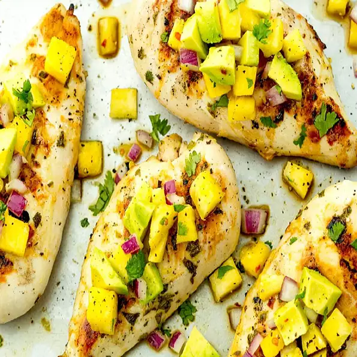

Pineapple Salsa Chicken

Description
This is a recipe for a flavorful chicken breast with a sweet and spicy pineapple salsa.
Ingredients
- Skinless chicken breast
- Olive oil
- Diced pineapple
- Red dell pepper
- Jalapeno pepper
- Red onion
- Lime juice
- Salt
Steps
- Preheat an outdoor grill for medium-high heat and lightly oil the grate.
- Pound chicken to a 1-inch thickness for even grilling. Brush oil over chicken and sprinkle Jamaican jerk seasoning evenly on both sides. Set aside.
- Combine pineapple, red pepper, jalapeno pepper, red onion, cilantro, lime juice, and salt in a small bowl for the salsa. Set aside.
- Place chicken on the hot grill and lower heat to medium. Grill until chicken is no longer pink in the center and juices run clear, 12 to 14 minutes,
turning halfway through. An instant-read thermometer inserted into the center should read at least 165 degrees F (74 degrees C).
Transfer to a plate to rest for 5 minutes.
- Top chicken with salsa mixture and serve.